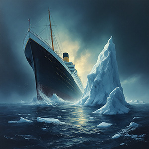

Titanic : le géant des mers sombre dans les abysses
Dans la nuit glaciale du 14 au 15 avril 1912, le Titanic, considéré comme le joyau de la technologie navale et symbole de luxe, a sombré dans les eaux profondes de l'Atlantique Nord après avoir heurté un iceberg. Ce drame a coûté la vie à plus de 1 500 passagers et membres d'équipage, marquant à jamais l'histoire maritime mondiale.
Le Titanic, parti de Southampton le 10 avril en direction de New York, transportait 2 208 personnes, dont certaines des personnalités les plus influentes de l'époque. Alors que tout semblait se dérouler sans encombre, l’impensable s’est produit aux alentours de 23 h 40. L’iceberg, d’abord aperçu trop tard, a éventré le navire sur son flanc tribord, condamnant le paquebot à un sort tragique. En quelques heures seulement, la "forteresse flottante" s'est enfoncée dans les profondeurs de l'océan, ne laissant que des débris et des récits de survie bouleversants.
Plus de 1 500 disparus dans la catastrophe maritime la plus tragique de l'histoire
Sauvetages insuffisants et erreurs fatales
Le drame du Titanic a mis en lumière les graves insuffisances des mesures de sécurité en mer. Malgré sa taille colossale, le paquebot n'était équipé que de 20 canots de sauvetage, incapables d’accueillir tous les passagers à bord. La confusion régnait, de nombreux canots étant lancés à moitié vides tandis que les classes inférieures peinaient à atteindre les ponts supérieurs.
Les survivants, récupérés par le RMS Carpathia dans les heures qui ont suivi le naufrage, ont raconté des scènes d’horreur : des cris désespérés, des familles déchirées et des vies brisées en un instant. Le naufrage du Titanic est non seulement une tragédie humaine mais aussi une leçon amère sur la présomption humaine face aux forces de la nature.
Les suites de la catastrophe
Le monde entier a été choqué par la nouvelle du naufrage. Des enquêtes ont immédiatement été ouvertes pour comprendre les causes de cette tragédie évitable. Les régulations maritimes ont été profondément révisées, aboutissant à des règles plus strictes sur le nombre de canots de sauvetage, l'équipement radio et les exercices d'urgence à bord des navires.
Le Titanic, qui symbolisait autrefois le progrès technologique et la maîtrise humaine, est devenu un triste rappel de l'humilité nécessaire face aux dangers naturels.